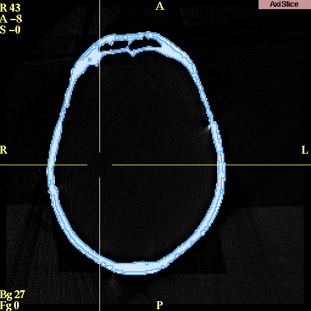

Slicer has a set of effects (tools) for editing (or segmenting) your data.
Before Editing
On the Main menu, click Editor.
The Volumes tab appears:
NOTE: Slicer creates (in memory) a working version of the data that reflects your edits (called a label map). When saved, the default file name of this working copy is called Working.
Before you start editing:
- If you have multiple copies of grayscale or label maps that are part of
your scene, select the one you currently want to edit.
- Enter a Descriptive Name that is meaningful for the data
(such as 'vessels' or 'ventricles').
- Click View to change the view mode to 4x512.
When you have finished editing, make sure to save your changes. Slicer
will remind you if you have unsaved volumes and will display the names of
unsaved volumes.
NOTE: Slicer will strip the headers off the images when you save
your data. Slicer encodes the geometry and orientation of your data
in a MRML (Medical Reality Modeling Language) file. You can save, reload, and repeatedly
update your MRML file until you have created the scene you want.
Click Start Editing. The Effects tab appears:
Editing Data
Select the Active Slice to edit by clicking Red, Yellow, or Green.
About the Editing Effects
Some considerations are common to all the editing effects:
- Select the correct input volume of data to edit, so that the edits will be applied properly.
- Set the scope of your edits properly:
one slice (the one on the screen that you are currently editing); three
slices (the current slice and the slices on either side of the current slice);
or the entire volume.
For some effects, such as drawing, it only makes sense to
have the scope of the edits be the current slice.
For other effects, such as thresholding, it makes sense to apply the changes to the
entire 3D volume.
- When you select any of the effects, the following row of buttons
appears:
The button labels are abbreviations for the effects (except for PhaseWire and
Measure Island).
The selected button is the current effect.
A description appears under the row of buttons.
The right-most button is Undo (Un), which becomes available after you apply any effect.
If you click Un, it undoes (or reverses) the last applied effect.
Using the Effects
Threshold effect
The goal of thresholding is to limit the output image to only those pixels
whose signal intensity is between the lower and upper bounds you select.
In the new output volume, all the pixels will have a single label (the Output color).
Threshold is useful for separating the anatomy of interest
from surrounding anatomy, based on the signal intensity of the anatomy of interest. For example, Threshold works well for segmenting bone in CT data.
To use Threshold:
- Click Threshold. This window appears:
- Select the Input Volume.
- Select the Scope and Interact ranges.
- Click Output and select a color, or enter an Output color number. You can also enter an optional label for what that color will represent. For instance, in this example, the chosen color is 2 (orange) and the label is 'skin'.
- Adjust the Lo slider to exclude points whose signal intensity is too low.
- Adjust the Hi slider to exclude points whose signal intensity is too high.
- Click Apply to apply the thresholding effect. Slicer will update the
Working volume with your new label of thresholded data.
Results of thresholding
In the example below, we are segmenting the CT skull bone.
Thresholding has changed the label to be blue.
Notice that the skull is well-defined and separated from the rest of the image.

Change Label effect
The Change Label effect changes the value of the label of pixels to another value.
Change Label is useful when you are merging two data sets together
and you want to keep the data sets distinct from each other.
To use Change Label:
- Click Change Label. This window appears:
- Select the Input Volume.
- Select the Scope range.
- Enter a Value to change. This is the value of label of pixels in the Input Volume that Slicer will change.
- Click Output and select a color, or enter an Output color number. This is the new value that pixels with the Value to change will receive.
- Click Apply to apply the change label effect. Slicer will update the
Working volume with your newly labeled data.
Identify Islands effect
This effect does not currently work.
Change Island effect
The Change Island effect changes the label of an "island" of pixels.
Slicer considers an island to be a group of connected pixels that have the same label.
Change Island is useful when, after applying an effect (particularly thresholding) to the volume, you still are not able to separate the anatomy you are interested in.
For example, surrounding areas may have the same signal intensity as the anatomy of interest, as in the case below: separating the skull is difficult because surrounding points have the same label as the skull itself.

To use Change Island:
- Click Change Island. This window appears:
- Select the Input Volume.
- Select the Scope and Render ranges.
- Click New Label and select a color, or enter a New Label color number. This is the new label value that pixels in the selected island will receive.
- Click any part of the island. The pixels that are part of that island will receive the New Label value.
Results after using Change Island:

Measure Island effect
The Measure Island effect calculates the volume of an island of pixels. Slicer considers an island to be a group of connected pixels that have the same label.
To use Measure Island:
- Click Measure Island. This window appears:
- Select the Input Volume.
- Select the Scope range.
- Click Island Label and select a color, or enter an Island Label color number. Measure Island will calculate the volume of the pixels with the Island Label color in the selected island.
- Click any part of the island. Slicer will display the Size, in pixels, of the island you clicked. Slicer will also display the size of the Largest island within the selected Scope.
To calculate the total volume of the selected island,
use the following formula:
size * pixel_size * pixel_size * (thickness + spacing)
Erode effect
The Erode effect removes pixels at the border of all islands. Slicer considers an island to be a group of connected pixels that have the same label. Dilation is the opposite effect, and adds pixels around the borders of all islands.
Erode is useful for separating two distinct pieces of anatomy that are only partially connected, or for removing many small islands,
some of which are connected to the anatomy of interest (as shown below).

To use Erode:
- Click Erode. This window appears:
- Select the Input Volume.
- Select the Scope range. Multi Slice applies the one-slice erosion to each slice.
3D treats the whole volume at once.
- Click Value to Erode and select a color, or enter a Value to Erode color number. Erode will act only on pixels with the selected Value to Erode color.
- Enter 0 for the Fill value.
- Enter the number of times to apply the effect in the Iterations field.
- Select 4 for Neighborhood Size for less erosion or 8 for more erosion.
- Select Active to apply Erode to the active view. Select Native to apply Erode to the original view.
- Click either:
- Erode to remove pixels with the Value to Erode from around islands.
- Dilate to add pixels with the Value to Erode around islands.
- Erode & Dilate to erode, then dilate.
- Dilate & Erode to dilate, then erode.
Results after using Erode:
Draw effect
The Draw effect lets you specify pixels by drawing directly on them.
Draw is useful when automatic methods cannot segment the data correctly.
To use Draw:
- Click Draw. This window appears:
- Click Output and select a color, or enter an Output color number. This is the new value that pixels you draw on will receive.
- Enter a value for the Point Radius, which controls how fine each line of the drawing is. Using a value of 1 or 2 allows you to select individual points.
- Select the Mode of the left mouse button in the draw window.
Draw is for drawing on points. Select is for selecting points. Move is for moving selected points.
- If the Mode is Select or Move, you can use:
- Select All to select all points.
- Deselect All to deselect all points.
- Delete Selected to delete selected points.
- Delete All to delete all points.
- Select the Render range.
- Select the Shape that the left mouse represents in the draw window.
- Draw on the region of interest (ROI), using the left mouse button.
You can use the right mouse button to zoom in and out on the area.
The middle mouse button moves the image in the window.
- To clear the list of points after you click Apply, click Yes. To keep the same points in a list after you click Apply, click No.
- When you have finished drawing the outline of the ROI, click Apply.
Slicer will fill the ROI with the Output color.
Remove Islands effect
This function does not work.
Save Island effect
Save Island will retain the selected island, and remove disconnected pixels with the same label.
Save Island is useful for separating a single connected structure from other structures.
PhaseWire effect
PhaseWire is a semi-automatic tool to outline features on images by following edges or contours.
Using PhaseWire is a rapid way to outline a feature.
To use PhaseWire:
- Click PhaseWire. This window appears:
- Click Basic. (Only the Basic features work.)
- Click Output and select a color, or enter an Output color number. This is the new value that pixels you outline will receive.
- Select the Render range.
- Select the Shape of the outline.
Polygon will fill in the feature when you click Apply.
Lines will create only the outline and not fill in the feature.
- Select the Image Feature Size.
- Click the left mouse on the edge of the feature that you want to outline.
Release the mouse button, but follow the edge with the mouse.
If the "wire" starts to stray from the edge, click the mouse button to pull in the wire.
- To undo the last mouse click, click Undo Last Click.
- To start the outline process again, click Clear Contour.
- When you have finished drawing the outline of the ROI, click Apply.
If Polygon is selected, Slicer will fill the ROI with the Output color.
If Lines is selected, Slicer will outline the ROI with the Output color.